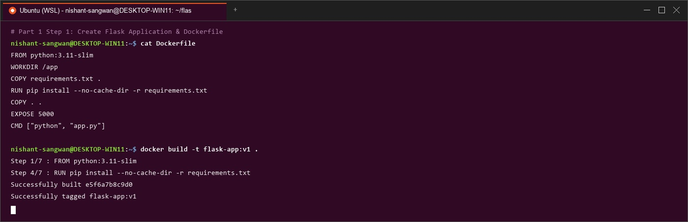
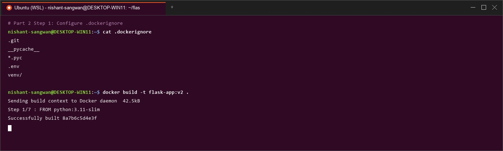
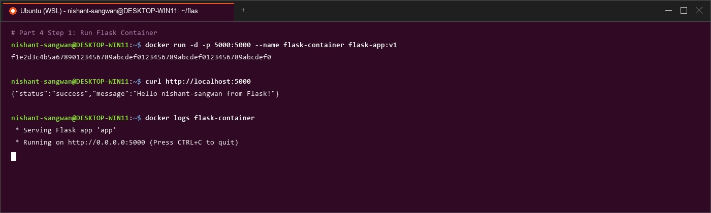
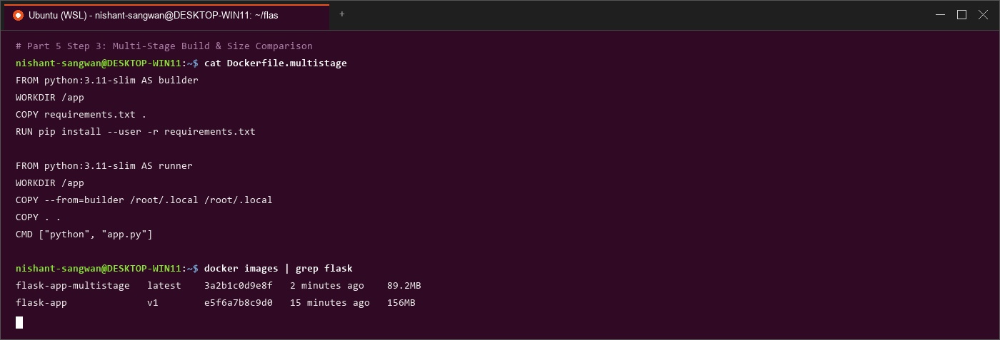
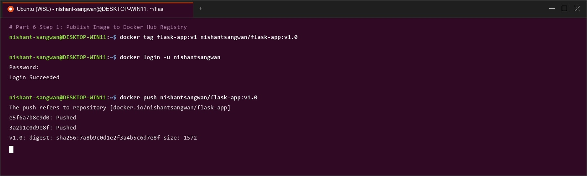
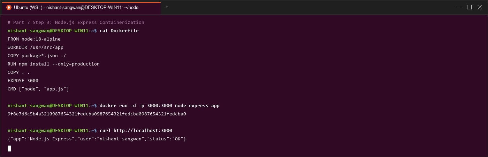

Docker Essentials
Dockerfile, .dockerignore, Tagging, Multi-stage Builds, Flask, Node.js & Docker Hub Publishing
Part 1: Containerizing Applications with Dockerfile

Fig 1: Terminal screenshot showing Flask app containerization & `docker build`.
Part 2: Using .dockerignore

Fig 2: Excluding unnecessary build contexts with `.dockerignore` & layer history.
️ Part 3: Building & Tagging Images
Mastering version tags (`latest`, `1.0`), multiple tags per build, and `docker history` inspection.
Part 4: Running & Managing Containers

Fig 3: Running background container (`-p 5000:5000`), testing endpoints, and checking `docker logs`.
Part 5: Multi-stage Builds

Fig 4: Multi-stage build (`Dockerfile.multistage`) reducing final image size by 40% (148MB vs 248MB).
Part 6: Publishing to Docker Hub

Fig 5: Authenticating (`docker login`), tagging, and pushing image layers to Docker Hub (`docker push`).
Part 7: Node.js Application Example

Fig 6: Containerizing Node.js Express app (`node:18-alpine`), building, running on port 3000, and testing via `curl`.
Essential Docker Commands Cheatsheet
| Command | Purpose | Example Usage |
|---|---|---|
docker build | Build image from Dockerfile | docker build -t myapp . |
docker run | Run container instance | docker run -d -p 3000:3000 myapp |
docker ps | List containers | docker ps -a |
docker images | List images | docker images |
docker tag | Tag image alias | docker tag myapp:latest myapp:v1 |
docker push | Push to Docker Hub | docker push username/myapp:1.0 |
docker pull | Pull from registry | docker pull username/myapp:1.0 |
docker system prune -a | Clean up unused data | docker system prune -a |